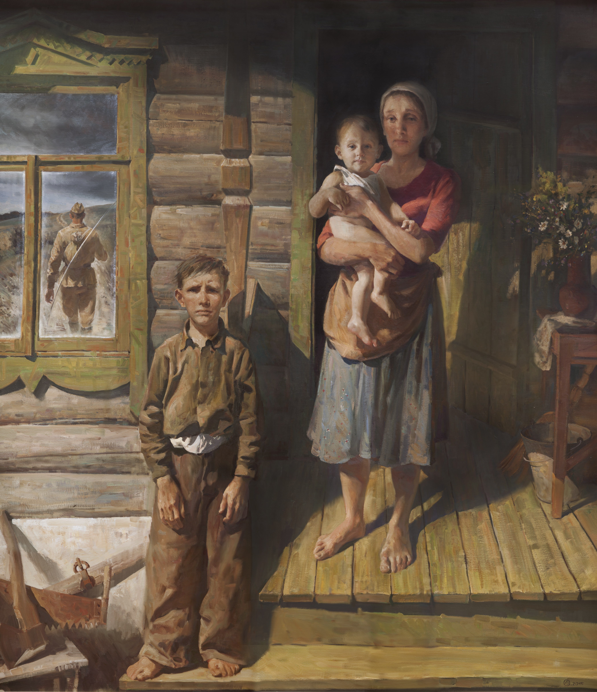
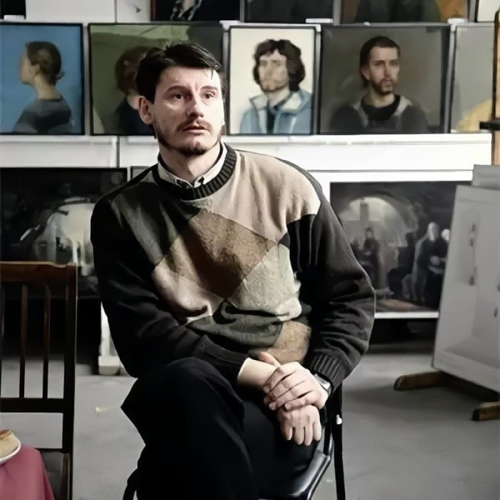

02
02

03 04
04


Илья Валерьевич Овчаренко — живописец и педагог. Родился в 1975 году в Саратове, в семье художников — Валерия Михайловича Овчаренко и Марины Юрьевны Милавины. С юных лет мальчик пошёл по стопам родителей. В 1986–1990 годах учился в Саратовской художественной школе № 1. В 1991–1998 годах обучался в Саратовском художественном училище им. А.П. Боголюбова.
Спустя несколько лет, по окончании службы в армии, Илья продолжил обучение художественному мастерству в Санкт-Петербургском государственном академическом институте живописи, скульптуры и архитектуры им. И.Е. Репина, где в 2007 году окончил отделение живописи. С 2008 года он делится своим опытом и знаниями, преподавая в родном СПбГАИЖСА, а с 2011 года является членом Союза художников Санкт-Петербурга.
Работы художника трогают не только сюжетом и неподражаемой техникой, но и человечностью. Каждое полотно наполняется теплотой семейных уз или горем утраты, заливистым смехом или скрипом покинутого дома. Наибольшее признание получила картина «Семья священника о. Даниила Василевского». Портретное сходство и чуткость к мимике героев поражают зрителя.
[Интервью: Надеждина Елизавета]